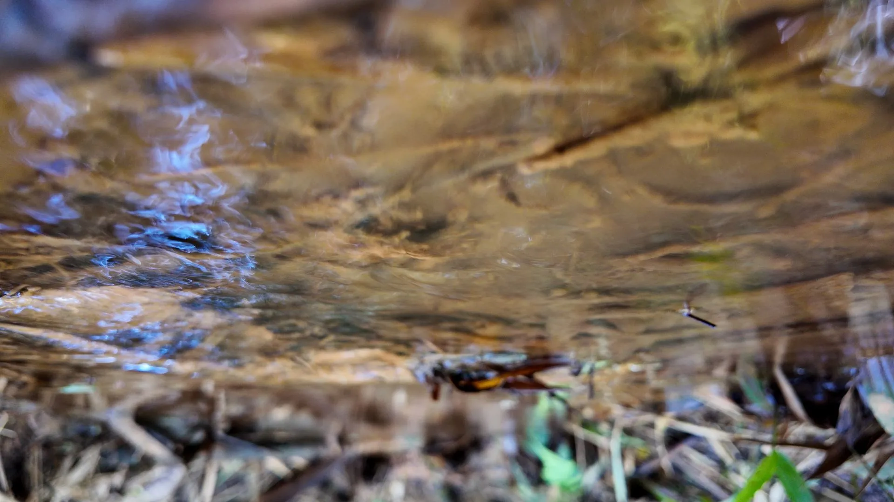
Las plantas
beben
Que entre, que se quede y que no se vaya llevándose el suelo.
Ya sabes qué sembrar
y cuánto. Falta con
qué se riega.
La calculadora te dio metros cuadrados. Ninguno de esos metros produce si el agua no se queda adentro del lote.
Los 7 principios de
inmunidad del bosque
Este es el principio que mueve a los otros seis, y por eso está justo en la mitad del programa.
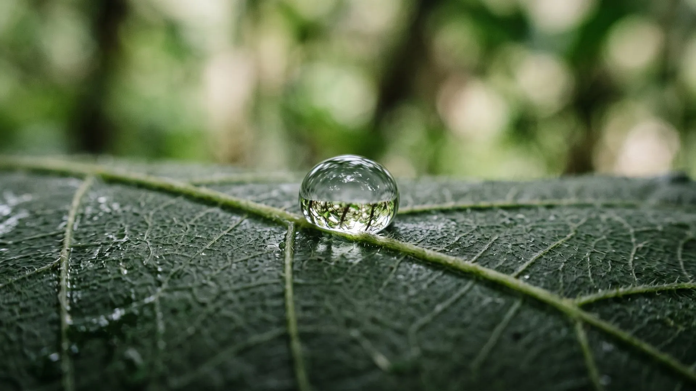
Sin agua, el nutriente
es invisible.
Puede estar en el suelo, medido en el análisis y pagado en el bocashi. Si no hay agua que lo disuelva y lo cargue, la raíz no lo ve.
El agua sube, se evapora
y el mineral se queda
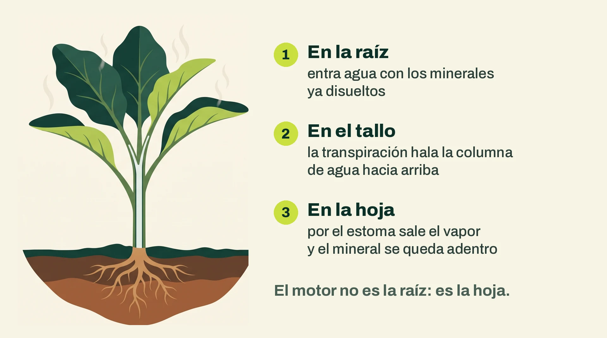
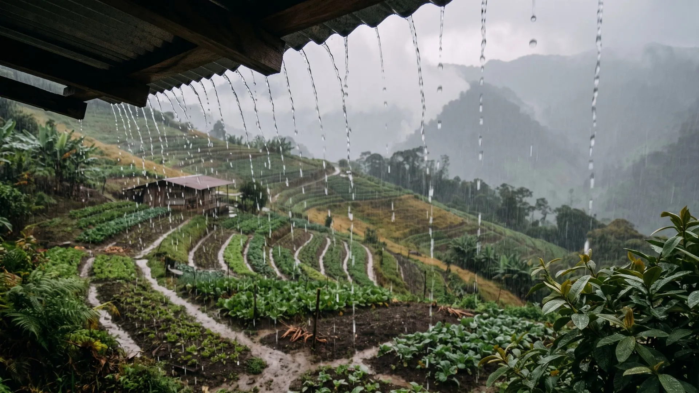
Lo que cae gratis cada año
Casi ninguna finca tiene problema de lluvia. El problema está en la retención.
Infiltra, escurre o se evapora
Entra al suelo y queda para la raíz y para el nacimiento de abajo. La única que trabaja para ti.
Corre por la superficie, gana velocidad con la pendiente y se lleva suelo y nutrientes.
Sale del suelo desnudo sin pasar por ninguna planta. Agua que llegó y no produjo nada.
Todo el diseño hídrico de una finca consiste en correr el reparto hacia la primera.
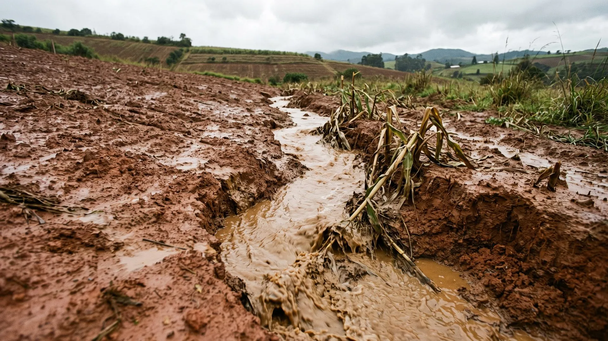
El agua que corre
se lleva tu finca.
El agua barrosa que sale del lote después del aguacero es la capa más fértil saliendo por la puerta. La misma que alimentaste con bocashi y microorganismos.
Cada aguacero sobre suelo desnudo en pendiente se paga dos veces: pierdes el suelo y pierdes el agua.
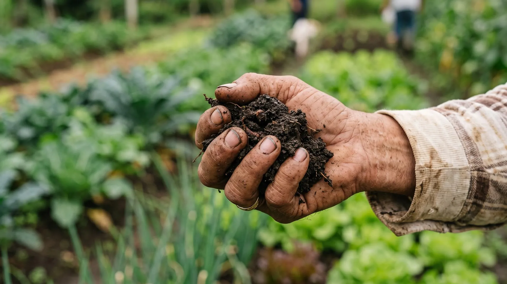
Con 2 % de materia
orgánica aguantas
3 o 4 semanas
El mismo lote, el mismo clima, la misma lluvia. La diferencia entre regar cada tres días y regar cada tres semanas está en el carbono.
La tabla de carbono y agua la vimos en la Semana 2: cada punto de carbono son 144.000 litros más por hectárea.
Comprada o biológica
Inversión grande de golpe: maquinaria, geomembrana y mantenimiento. El volumen nunca crece y el agua queda lejos de la raíz. Sirve, y mucho, para riego de verano.
Se construye con lo que ya produce la finca, crece cada año que sube la materia orgánica, no se evapora y guarda el agua donde la raíz la necesita.
Las dos conviven. La diferencia es cuál construyes primero.
Leer el agua
en tu terreno
Antes de mover un metro cúbico de tierra hay que entender por dónde pasa el agua. Esta parte es la tarea de la semana.
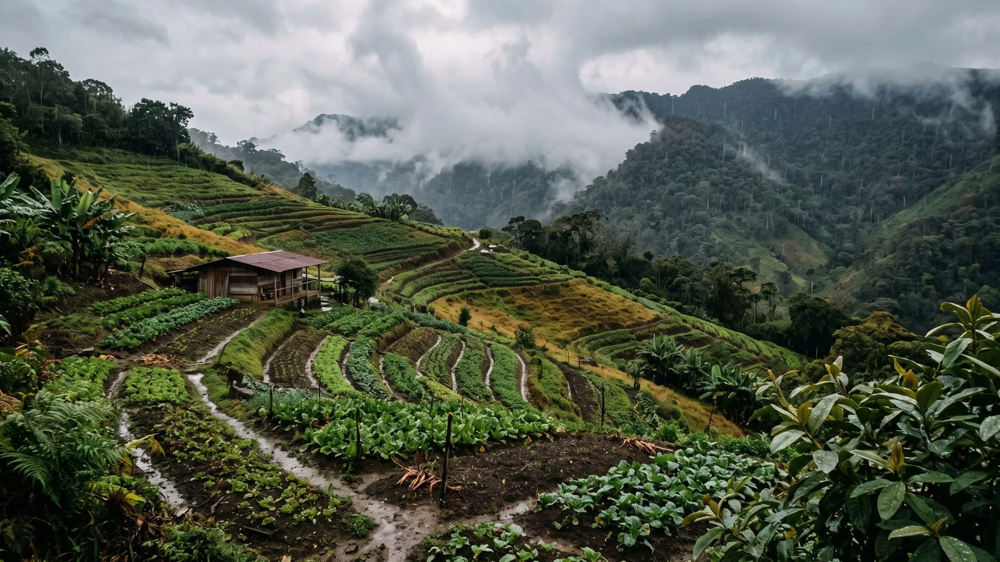
Camina el lote mientras llueve
- ¿Por dónde entra el agua? ¿De arriba, de un vecino, de una vía?
- ¿Por dónde corre? Marca los chorros: ahí el agua ya eligió su camino.
- ¿Dónde se empoza y dónde se escurre en segundos?
- ¿El agua que sale del lote es clara o es barrosa?
Cinco minutos de aguacero dan más información que un plano. Grábalo con el celular.
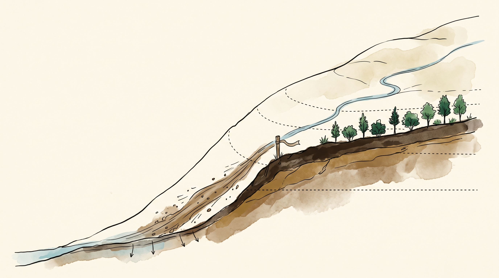
Donde el agua toma
fuerza
- Busca el mayor cambio de pendiente.
- Arriba el agua camina. Abajo ya viene cargada.
- Intervienes ahí y repartes con curvas.
Cortar el flujo antes de que erosione cuesta la décima parte de reparar la cárcava.
Tres maneras de trazar una curva de nivel
Dos palos, un travesaño y una plomada. Cuesta lo que cuesta la guadua y te lo haces esta semana.
Manguera transparente con agua entre dos personas. Más rápida en distancias largas.
Sirve para verificar y dejar registro. No reemplaza caminar con la estaca en la mano.
La curva de nivel es la única línea donde el agua se detiene a pensar.
Cinco pasos y ya tienes tu primera curva
- Calibra el nivel A invirtiendo las patas en el mismo sitio.
- Arranca en el punto clave y clava la primera estaca.
- Mueve la pata libre hasta que la plomada quede en la marca.
- Al terminar, mira la línea desde lejos y suaviza las culebras.
- Esa línea es el eje de tu terraza, tu zanja o tu línea de árboles.
Cuatro obras, cuatro problemas
Suelos con 20 a 90 cm de profundidad. La que usamos en La Huerta.
Para lotes con exceso hídrico, donde hay que sacar el agua controlada.
Para pendientes fuertes cuando necesitas superficie plana.
La alternativa en potreros y áreas grandes. Misma línea, menos obra.
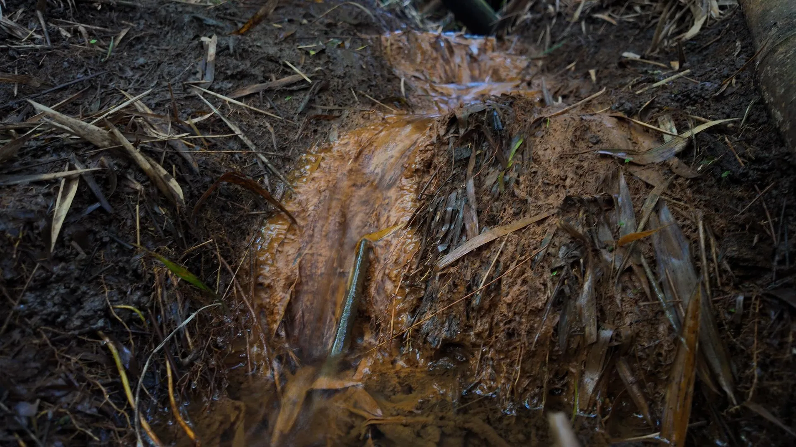
Así está hecha la
terraza de acá
Muro de piedra local o gavión bajo con material del mismo predio. Al terminarla entra bocashi generoso, harina de roca y microorganismos líquidos.
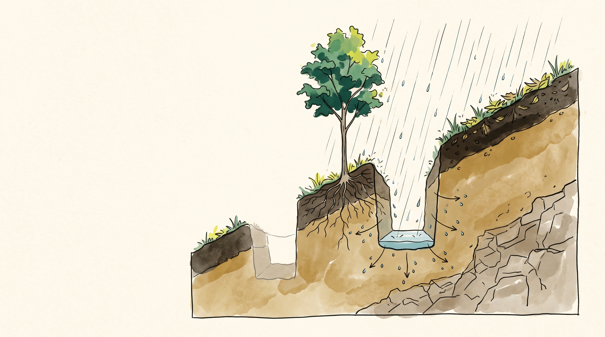
La zanja y la
línea de árboles
Sobre el borde superior va la línea de árboles: la zanja le da agua al árbol y el árbol le da raíz y sombra a la zanja.
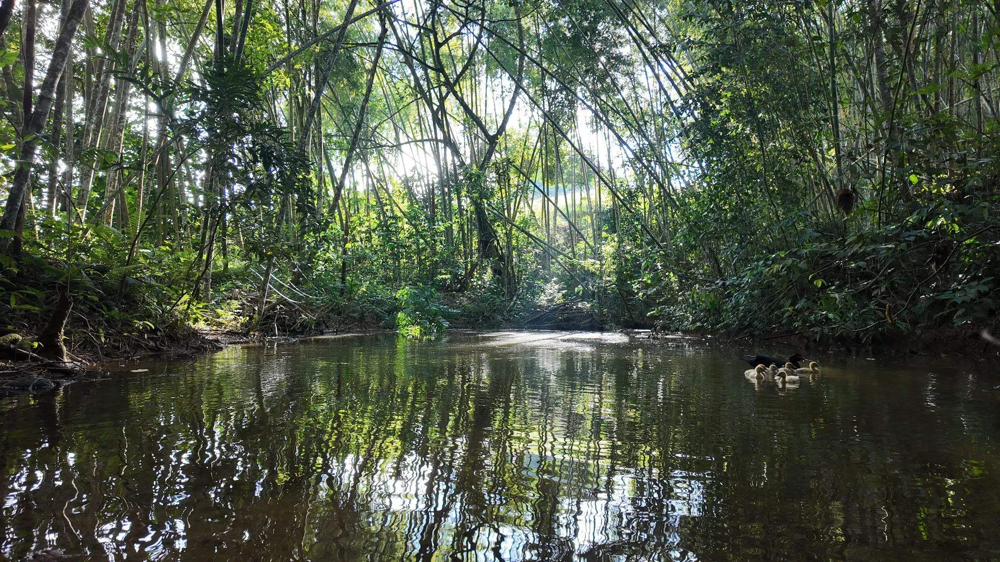
Impluvios: zanjas arriba del nacimiento
- En invierno se llenan y recargan el acuífero que alimenta el ojo de agua.
- En verano el nacimiento produce durante más semanas.
- Todos los nacimientos de La Huerta tienen este manejo.
Un nacimiento se cuida sembrando árboles y metiéndole agua a la montaña que está encima, no solo cercándolo.
Sembrar en el sentido de la pendiente
Cada surco trazado hacia abajo es un canal: el agua acelera, arrastra suelo y abre cárcavas. En café, en maíz y en hortalizas.
El agua se frena, se reparte a lo ancho y se infiltra. El mismo aguacero deja de ser amenaza y pasa a ser recarga.
Mismo lote, misma lluvia, misma semilla. Cambia el trazo y cambia el resultado.
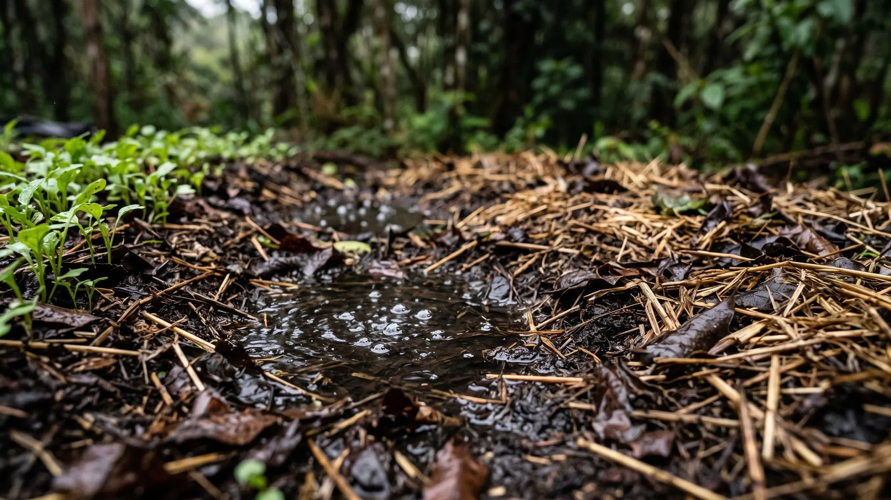
Con qué se tapa
- Rastrojo de la misma cosecha.
- Mulch de poda y guadaña.
- Coberturas vivas entre surcos.
- Vetiver en taludes y bordes.
- Biomasa del banco de proteína.
Lo que cortas con la escarda se queda en el sitio. La maleza cortada al cuello es cobertura.
El microclima también es manejo de agua
Bajan la temperatura, frenan el viento y reducen la evapotranspiración de todo lo que está debajo.
Interceptan la gota antes de que golpee el suelo: menos sellado, más infiltración.
Sombra permanente sobre el suelo. Un lote con sombra parcial pide bastante menos riego.
Dos maneras de saber si el suelo tiene sed
Abres 15 cm, tomas un puñado y aprietas. Si se agrega y mancha la mano, hay humedad. Si se desmorona como polvo, el cultivo ya está sufriendo.
Te da el número. 25 % está cerca del punto de marchitez permanente y 30 a 38 % es el rango óptimo.
Empieza con la mano y calibra el tacto con la sonda. En dos semanas tu mano ya es un sensor.
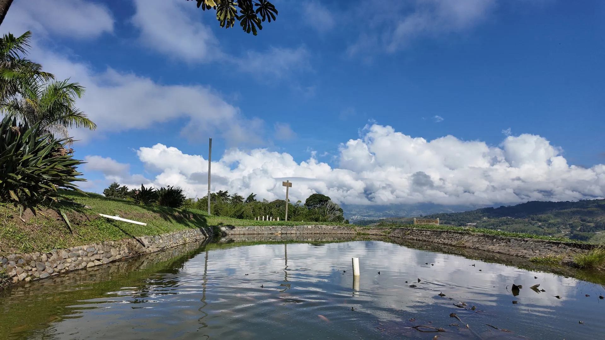
La mejora más barata de toda la clase
Casi el doble de agua útil con la misma bomba y la misma agua.
Riega cuando el suelo lo pida
- Riegos cortos y frecuentes crían raíces superficiales.
- Riegos profundos y espaciados mandan la raíz hacia abajo, donde el agua dura.
- Un cultivo que nunca pasa sed nunca aprende a buscar agua.
El calendario sirve para registrar lo que hiciste, no para decidir lo que vas a hacer.
El ciclo que cierra el hotel
Aguas grises y negras de 23 habitaciones y dos restaurantes.
Tratamiento primario y secundario antes de llegar al suelo.
Tratamiento biológico con plantas y análisis de laboratorio una vez al año.
Riega el pasto de corte, el botón de oro y el bore, con nitrógeno incluido.
Tanque de 2.000 litros con flotador, una hora de descarga por evento y 10 litros de microorganismos líquidos antes de cada descarga para quitar el olor.
Dónde sí y dónde nunca
Pasto de corte, bancos de proteína, potreros en rotación, arbolado maderable y ornamental.
Hortalizas de consumo directo, aspersión cerca de zonas de paso, frutales bajos donde el agua toque el fruto.
Y análisis de laboratorio al menos una vez al año, aunque todo se vea bien.
Analiza tu agua una vez al año
- Salinidad y conductividad: un agua salina sala el suelo despacio.
- Sodio, calcio y magnesio: definen si tu agua dispersa o estructura.
- Alcalinidad y pH: condicionan la eficacia de los biopreparados.
Si el agua es de acueducto, déjala reposar 24 horas destapada antes de usarla con microorganismos. El cloro los mata.
Trazado y construcción en campo
El nivel A en uso, el trazado de la curva con estacas y la construcción de la terraza paso a paso.
El agua mueve a los otros seis
- Microclima: los estratos bajan la evapotranspiración del lote.
- Microorganismos: sin humedad el inóculo no trabaja.
- Reciclaje: el nutriente solo se mueve disuelto.
- Energía: el agua transporta y deja que la energía dé otra vuelta.
Cinco decisiones de agua para cualquier finca
- Subir la materia orgánica: el reservorio más barato.
- Trazar en curva de nivel desde el punto clave, siempre.
- Nunca dejar suelo desnudo.
- Regar de noche, por observación y en profundidad.
- Cerrar el ciclo: el agua usada vuelve a entrar donde sí se puede.
El mapa de agua
de tu lote.
- Dibuja tu lote a mano. Una hoja y un lápiz bastan.
- Marca por dónde entra el agua, por dónde corre y por dónde sale.
- Señala el punto clave y el nacimiento, si lo tienes.
- Decide qué va sobre la primera curva: terraza o zanja.
Sube la foto del dibujo a la comunidad · antes del próximo miércoles
Principio 6 · Energía
Cada vuelta es plata que no sale
Los videos se liberan el lunes: Pastoreo Racional Voisin en La Huerta, con la medición de rebrote en los potreros.
El agua que retuviste esta semana es la que mueve toda esa energía.